I start by adding the target IP address to my local
/etc/hosts file to ensure proper name resolution.
I take a quick look at the web application and immediately notice the presence of an admin login. At first glance, I am unable to bypass it.
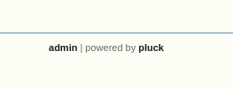
While exploring the web application, I also perform a port scan against the target machine.
The scan reveals that ports 22, 80, and 3000 are open.
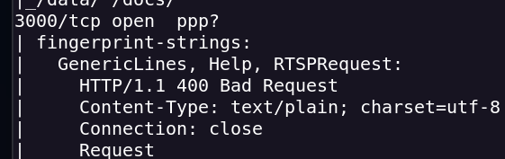
I access the service running on port 3000 and perform directory enumeration using Gobuster.
During this process, I discover sensitive information that leads me to a stored password hash.
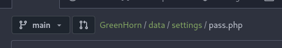
<?php
$ww = 'd5443aef1b64544f3685bf112f6c405218c573c7279a831b1fe9612e3a4d770486743c5580556c0d838b51749de15530f87fb793afdcc689b6b39024d7790163';
?>I crack the recovered hash using John the Ripper, obtaining valid credentials.
Using the cracked credentials, I log in through the previously discovered admin panel with administrative privileges.
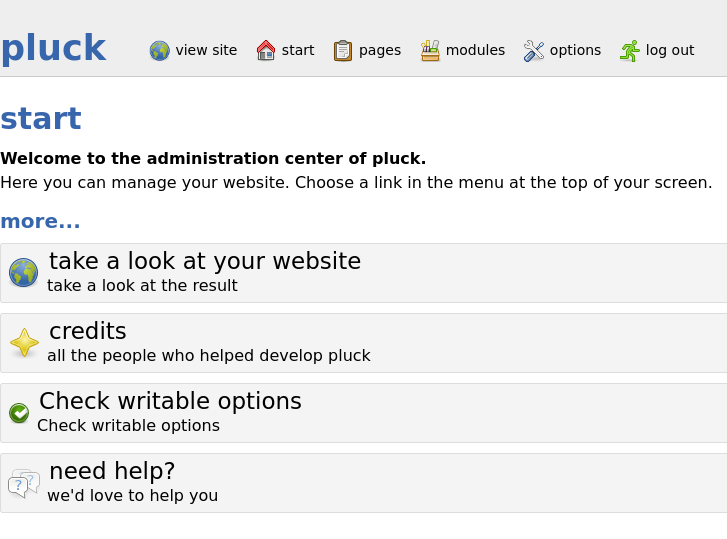
The application is running Pluck CMS version 4.7.18, which is vulnerable to a known Remote Code Execution vulnerability.
This vulnerability allows the upload of a malicious module in
.zip format, enabling arbitrary command execution.
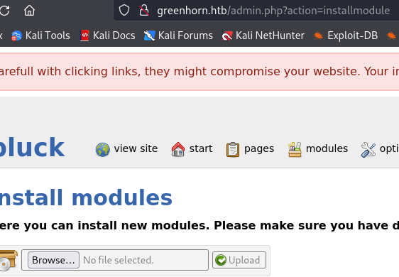
Due to missing required files, I am initially unable to upload a standalone reverse shell.
To bypass this limitation, I clone the official repository and modify an existing module by injecting the PentestMonkey PHP reverse shell.
git clone http://greenhorn.htb:3000/GreenAdmin/GreenHorn.gitAfter uploading the modified module, I successfully obtain a reverse shell on the target system.
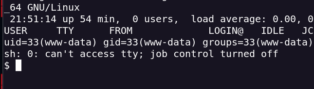
Once the reverse shell is established, I upgrade it to a fully interactive TTY for better stability.
python3 -c 'import pty; pty.spawn("/bin/bash")'
I am running as the www-data user, which does not
have access to the user.txt flag owned by the
junior user.
I search the system for files owned by this user, but nothing immediately useful is found.
find / -type f -user junior 2>/dev/nullI attempt to reuse the admin password obtained earlier and successfully access additional files.
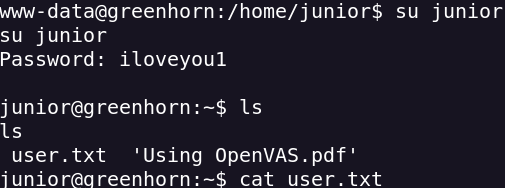
One of the files retrieved is hidden and appears to be a PDF document.
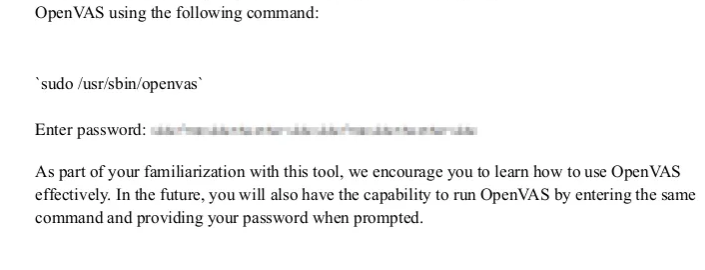
I extract images from the PDF using pdfimages in
order to analyze its contents.
pdfimages "./Using OpenVAS.pdf" greenhorn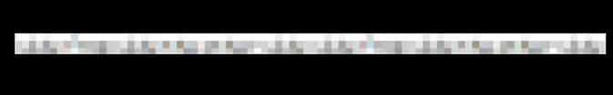
The extracted image is heavily pixelated. To recover the hidden text, I use Depix, a tool designed to reconstruct text from pixelated screenshots.
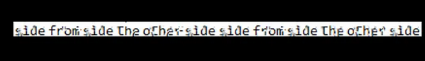
The recovered information reveals the root password. Using these credentials, I gain full root access to the system.
With root privileges, I successfully retrieve both the
user.txt and root.txt flags.
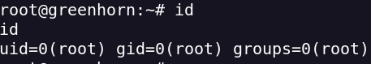